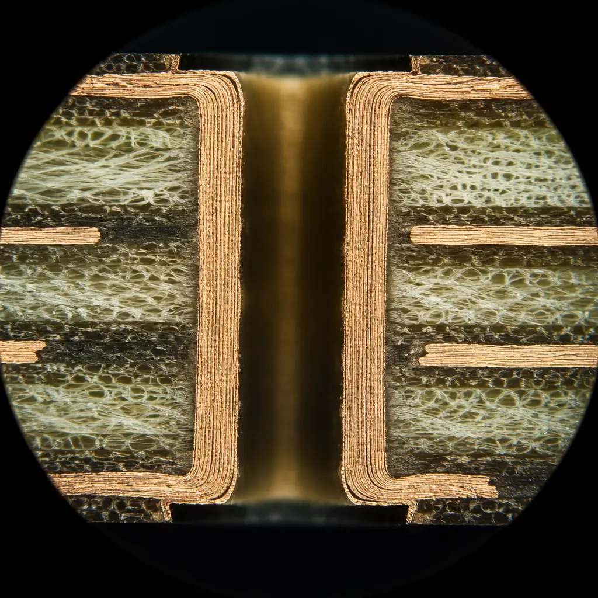
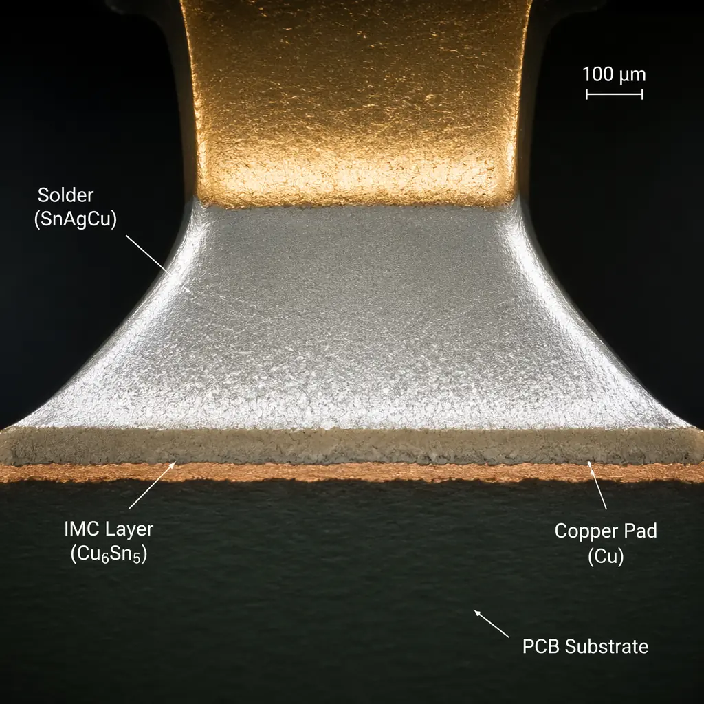
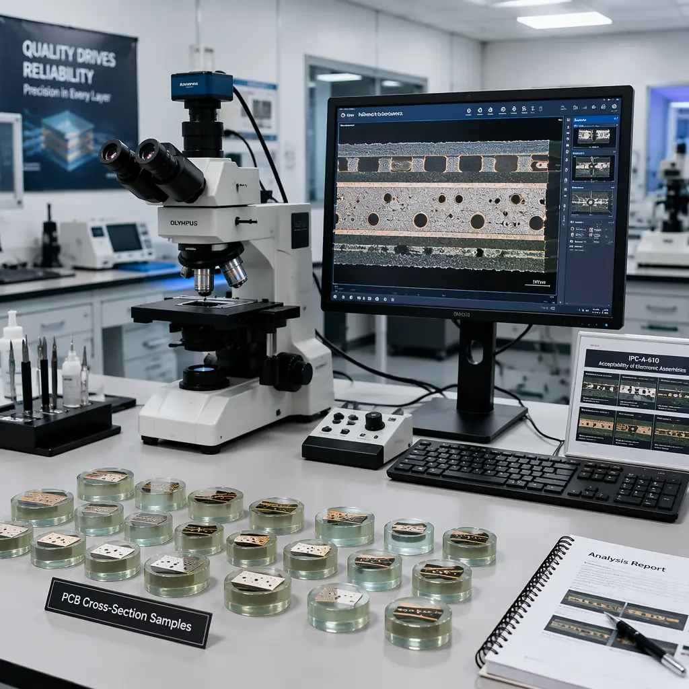

Some of the most critical quality indicators inside a PCB are invisible from the outside. You cannot measure copper barrel wall thickness through visual inspection. You cannot verify intermetallic compound (IMC) layer formation by looking at the surface finish. You cannot confirm that a via is fully filled and void-free without cutting it open. PCB microsection analysis — also called cross-sectioning or metallographic analysis — is the destructive physical technique that reveals these hidden quality dimensions. For procurement engineers and quality managers buying boards for automotive, medical, aerospace, or industrial applications, understanding what microsection analysis measures, when it is required, and how to interpret the results is essential supplier evaluation knowledge.
Huaxing PCBA operates an in-house cross-section laboratory at our IATF 16949 & ISO 9001 certified Shenzhen facility. We perform microsection analysis on monthly process control coupons from every production line, maintain cross-section records for PPAP Level 3 documentation packages, and provide complete photo-micrograph reports with IPC-6012 measurement annotations. With 8 SMT lines and 32-layer capability, our cross-section lab supports both routine quality verification and rapid-turn failure analysis investigations.

What Is PCB Microsection Analysis?
Microsection analysis is a destructive metallographic technique that prepares a precisely targeted cross-section of a PCB, revealing its internal structure for optical and electron microscope inspection. The process follows a rigorous four-stage sequence that transforms a small cut-out of a production board into a mirror-polished specimen ready for measurement at magnifications up to 1,000×:
Targeted Sectioning — Cut at the Region of Interest
A precision diamond saw cuts through the specific via, solder joint, or layer stack-up region that needs analysis. For routine process control, coupons are built into the production panel border specifically for cross-sectioning. For failure analysis, the cut is positioned at the suspected defect location identified by X-ray or electrical testing. The cut must be perpendicular to the feature being measured — an angled cut distorts wall thickness and void dimension measurements.
Potting — Encapsulation in Epoxy Resin
The sectioned sample is mounted in a two-part epoxy resin under vacuum to eliminate bubbles that would obscure the analysis surface. The epoxy fills all voids and vias, providing mechanical support during grinding and preventing edge rounding — where the softer laminate erodes faster than the copper, creating a misleading cross-section profile. Vacuum impregnation is critical: without it, air trapped in unfilled vias creates artifacts that look like process voids.
Grinding & Polishing — Sequential Abrasive to Mirror Finish
The potted sample is ground through progressively finer silicon carbide papers — typically 240 → 400 → 600 → 1200 → 2400 grit — then polished with diamond suspension compounds down to 0.05 μm particle size. Each stage must completely remove the deformation layer from the previous grit. Inadequate polishing leaves scratches that obscure fine features like the IMC layer (typically only 1–3 μm thick). A final etch with ammonium hydroxide/hydrogen peroxide micro-etch reveals copper grain structure for plating quality assessment. See our PCB stackup design guide for how layer construction affects cross-section interpretation.
Microscope Measurement & Documentation
The prepared cross-section is examined under an optical microscope at 50× to 1,000× with calibrated measurement software. Digital micrographs are captured at each magnification with measurement overlays showing copper thickness, IMC layer thickness, void dimensions, and plating uniformity. Results are compared against IPC-6012 acceptance criteria and documented in a formal microsection report with annotated images, measurement data tables, and a pass/fail determination for each inspected feature.
Key Takeaway: Microsection analysis is the only method that directly measures copper barrel wall thickness in plated through-holes, IMC layer thickness in solder joints, and via fill void percentage. X-ray and AOI provide indirect indications — cross-sectioning provides the definitive measurement. For IPC Class 3 boards, microsection coupon analysis is required on every production lot, not just on first-article samples.
When Is Microsection Analysis Required?
Not every PCB order needs cross-section analysis. But for high-reliability applications, specific production milestones trigger mandatory microsection testing. Procurement professionals should understand these triggers to avoid surprises when their supplier requests additional lead time or cost for cross-section work:
PPAP / FAI — Production Part Approval Process & First Article Inspection
PPAP Level 3 submissions, common in automotive (per IATF 16949) and medical device manufacturing, require cross-section analysis as part of the dimensional evaluation. A first-article board is sectioned at multiple locations to verify that copper plating thickness, annular ring dimensions, dielectric spacing, and solder joint quality meet the engineering drawing specifications before production volumes begin. For automotive Tier 1 suppliers, this is non-negotiable — no cross-section report, no PPAP sign-off. Our PCB certifications compliance guide covers PPAP documentation requirements in detail.
New Supplier Qualification — Verify Capability Claims
When evaluating a new PCB supplier, request cross-section coupons from a recent production lot of similar complexity to your boards. A supplier who cannot produce a clear cross-section micrograph with IPC-6012 measurement annotations likely lacks the process control infrastructure for high-reliability manufacturing. The cross-section report reveals whether the supplier's plating line actually achieves the 20–25 μm minimum copper barrel thickness they claim — the single most common discrepancy between supplier capability statements and measurable reality. Our PCB incoming quality inspection guide covers the full supplier evaluation framework.
Failure Analysis — Root Cause Investigation of Field Returns
When a PCB fails in the field and non-destructive methods (X-ray, electrical testing, visual inspection) cannot identify the root cause, microsection analysis becomes the investigative method of last resort. Cross-sectioning at the precise fault location reveals crack propagation paths through via barrels, delamination gaps between prepreg layers, IMC layer overgrowth causing brittle solder joints, and void networks inside via fills. The micrograph becomes the definitive evidence for corrective action. Our PCB failure analysis guide details the full investigation workflow — microsection is step 4 in the standard 7-step FA process.
Process Control — Ongoing Lot Verification
For IPC Class 3 production (high-reliability electronics), monthly or per-lot microsection analysis of process control coupons is a standard requirement. These coupons — small test patterns built into the production panel border — are sectioned, measured, and filed as objective evidence of plating process stability. Trending copper thickness over time identifies plating bath depletion before it produces out-of-spec boards. This is the difference between a supplier who detects quality problems and one who prevents them. See the IPC Class 2 vs Class 3 guide for the full inspection requirement differences.

Key Measurements in a Microsection Report
A properly annotated microsection report contains five core measurements that together provide a complete picture of PCB internal quality. Each measurement maps to a specific IPC-6012 acceptance criterion. When reviewing a supplier's cross-section report, focus on these numbers:
Copper Barrel Wall Thickness — The Most Critical Measurement
Measured at the midpoint of the plated through-hole barrel (not at the knee or the pad surface, where plating is naturally thicker). IPC-6012 specifies a minimum average of 20 μm for Class 2 and 25 μm for Class 3, with no single measurement below 18 μm (Class 2) or 20 μm (Class 3). Thinner plating creates a thermal-cycle failure risk — during soldering or field operation, the CTE mismatch between copper (~17 ppm/°C) and FR-4 laminate (~55 ppm/°C in the Z-axis) causes cyclic strain that eventually cracks under-spec barrel walls. A 15 μm barrel thickness might survive initial electrical test but fail after 500 thermal cycles.
Plating Uniformity — Barrel-to-Knee Ratio
Electroplating is inherently non-uniform — the knee of the via (where the barrel meets the surface pad) receives higher current density and thicker plating than the center of the barrel. A well-controlled plating process produces a barrel-to-surface thickness ratio between 0.7 and 0.85. Below 0.6 indicates poor throwing power — the plating bath chemistry or current waveform needs adjustment. Above 0.9 may indicate over-plating at the surface that reduces pad flatness for SMT assembly. Cross-section measurement at three points — surface pad, via knee, and barrel midpoint — quantifies plating uniformity.
Intermetallic Compound (IMC) Layer Thickness
The IMC layer forms at the interface between the solder and the copper pad — it is the metallurgical bond that makes the solder joint, and its thickness is the single best indicator of solder joint reliability. For SAC305 lead-free solder on ENIG finish, the target IMC thickness is 1–3 μm. Below 1 μm indicates incomplete wetting (cold joint risk). Above 5 μm creates a brittle interfacial layer prone to fracture under thermal or mechanical shock. IMC thickness is measured at 2,000× magnification on a polished and micro-etched cross-section — optical microscopy at 500× is the minimum viable magnification for this measurement.
Via Fill Quality — Void Percentage and Fill Material Integrity
For via-in-pad designs (common in high-density BGA breakouts), vias must be filled — typically with conductive epoxy or non-conductive epoxy — then capped and plated over to create a flat solderable surface. Cross-section analysis measures void percentage in the fill material: IPC-4761 Type VII specifies maximum 10% void area per individual via cross-section. Voids larger than 10% can trap process chemistry (plating solutions, flux), causing outgassing during reflow that blows open the cap plating — a defect called "blowhole" that creates open circuits. Multiple cross-sections per board verify fill consistency. Our PCB laminate selection guide covers how material choice affects via reliability.
Solder Joint Void Percentage — BGA and QFN Joint Analysis
Cross-section through the center of a BGA or QFN solder joint reveals internal voiding that 2D X-ray may miss (voids hidden behind the solder ball curvature). IPC-7095 specifies maximum 25% total void area per BGA joint for Class 2 and 15% for Class 3, with no single void exceeding 15% (Class 2) or 10% (Class 3) of the joint cross-sectional area. Voids concentrated at the component-side interface are more damaging than voids in the bulk solder because they reduce the effective bond area and create stress concentration points. Cross-section void measurement is the reference method that validates X-ray void calculations.
| Measurement | IPC Class 2 (Dedicated Service) | IPC Class 3 (High Reliability) | Measurement Method |
|---|---|---|---|
| Copper barrel thickness (avg) | ≥ 20 μm | ≥ 25 μm | Optical microscope 200×, barrel midpoint |
| Copper barrel thickness (min single) | ≥ 18 μm | ≥ 20 μm | Optical microscope 200×, thinnest point |
| IMC layer thickness (SAC305 on ENIG) | 1–5 μm | 1–3 μm | Optical/SEM 500–2,000×, micro-etched |
| Via fill void percentage | ≤ 15% per cross-section | ≤ 10% per cross-section | Optical microscope 100×, area calculation |
| Solder joint void (BGA) | ≤ 25% total, ≤ 15% single | ≤ 15% total, ≤ 10% single | Cross-section + image analysis software |
| Dielectric spacing (inner layer) | ≥ 90 μm | ≥ 90 μm | Optical microscope 200×, calibrated scale |
| Annular ring (PTH) | 90° breakout acceptable | ≥ 25 μm min annular ring | Optical microscope 100×, four-point measurement |
Procurement Insight: When a supplier provides a cross-section report, check whether measurements are taken at the correct locations. The most common report quality issue is measuring copper thickness at the via knee (thickest point) rather than the barrel midpoint (thinnest point) — inflating the result by 30–50%. A legitimate report annotates the measurement location on the micrograph so you can verify it yourself.
How to Read a Microsection Report
A professional cross-section report follows a standard format that makes findings auditable and comparable across suppliers. If your supplier's report is missing any of these elements, the analysis may not withstand a customer audit:
Sample Identification — Traceability to Production Lot
The report must identify: board part number, revision, production lot/date code, panel location from which the coupon was taken, and a unique cross-section specimen ID. Without full traceability, the microsection cannot be linked back to specific production parameters — defeating the purpose of process control. IATF 16949 auditors specifically check for this traceability chain.
Magnification & Scale Bar — Every Micrograph Needs Both
Each micrograph must display the magnification used (e.g., 200×) and a calibrated scale bar (e.g., "— 50 μm"). Without a scale bar, the image is qualitative, not quantitative — you cannot independently verify the supplier's thickness measurements. Digital measurement overlays (arrows with dimension callouts) should reference the scale bar calibration.
IPC Acceptance Criteria Reference — Which Standard, Which Revision
The report must state which IPC standard and revision was applied (e.g., "IPC-6012E Class 3") and for each measurement, whether the result is "Conforms" or "Does Not Conform" against the applicable criterion. A report that shows measurements without pass/fail determinations leaves the interpretation burden on you — which is not what you're paying for.
Measurement Data Table — Not Just Images
All quantitative measurements should be tabulated alongside their acceptance limits. A minimum data set includes: copper thickness at barrel midpoint, copper thickness at knee, IMC thickness at pad-to-solder interface, void area percentage for each via inspected, and dielectric spacing between inner layers. The data table enables statistical trending over multiple lots — the foundation of continuous process improvement.
Common Defects Detected by Microsection Analysis
Cross-sectioning reveals defects that are invisible to every non-destructive inspection method. Here are the most common findings and what they mean for board reliability:
Voiding in Copper Barrel Wall — Plating Process Failure
Dark spots or gaps in the plated copper barrel wall visible at 100–200× indicate plating voids. These form when hydrogen bubbles adhere to the hole wall during electroplating, blocking copper deposition at that spot. A single void >5% of the barrel wall circumference is rejectable per IPC-6012. Multiple small voids distributed along the barrel indicate a systemic issue with the plating bath — insufficient agitation, improper brightener concentration, or contaminated electrolyte. Voids concentrate current during operation, creating localized heating that accelerates electromigration failure.
Crack Propagation — Via Barrel Fatigue
Circumferential or barrel cracks — visible as continuous dark lines running through the copper wall around the via circumference — indicate thermal cycle fatigue. These cracks initiate at the via knee (where mechanical stress concentrates due to CTE mismatch) and propagate around the barrel. A crack extending through >50% of the barrel circumference represents an open-circuit risk at the next thermal cycle. Cracked vias are the #1 failure mode in high-layer-count boards used in thermal cycling applications. Prevention requires high-Tg laminate (≥ 170°C) and minimum 25 μm copper barrel thickness.
Inner Layer Delamination — Resin/Copper Separation
Microscopic gaps between the copper foil and prepreg resin, or between adjacent prepreg layers, visible as dark horizontal lines at the layer interface. These are caused by poor oxide treatment before lamination, insufficient resin flow during pressing, or moisture expansion during soldering (popcorning). A gap >25 μm at any point along the interface is rejectable for Class 3. Delamination provides a path for moisture ingress and conductive anodic filament (CAF) growth — failure mechanisms that can take months to manifest. Prevention requires 6-hour bake at 125°C before reflow for boards that have been stored in uncontrolled humidity.
Poor Wetting / Cold Solder Joint — Insufficient IMC Formation
At the pad-to-solder interface, a cold joint appears as a sharp boundary with no visible IMC layer — the solder physically contacts the pad but has not metallurgically bonded to it. This happens when the peak reflow temperature at that joint was too low, the time above liquidus was too short, or the pad surface was contaminated (oxidation, organic residue). Cold joints often pass electrical test but fail after weeks of thermal cycling as the mechanical bond cracks. Cross-sectioning is the only definitive method to confirm or rule out cold joints — X-ray cannot distinguish between a cold joint and a properly formed one.
Insufficient Hole Fill — Resin Recession in Filled Vias
In via-in-pad designs, the fill material (epoxy) must be flush with or slightly proud of the pad surface before capping and plating. Cross-section analysis reveals two common fill defects: fill recession (epoxy pulled back from the surface, creating a dimple) and incomplete fill (void at the bottom of the via). Both conditions create an unstable surface for the cap plating, leading to dimpled or cracked pads that cause solder joint reliability issues. IPC-4761 specifies that fill recession must not exceed 75 μm from the pad surface for via-in-pad designs.

Huaxing PCBA: In-House Cross-Section Capability as Standard
For quality-focused procurement teams, a supplier's cross-section capability is a direct indicator of their commitment to process control. At Huaxing PCBA, cross-section analysis is not a special-request extra — it is built into our production quality system:
Monthly Process Control Coupons — Every Production Line, Every Month
We embed cross-section coupons in the panel borders of every production line's monthly process control run. These coupons are sectioned, measured, and filed — creating a continuous quality record that demonstrably proves plating process stability over time.
PPAP Level 3 Documentation Package
For automotive customers requiring full PPAP submissions, our cross-section lab produces the dimensional evaluation reports, annotated micrographs, and measurement data tables required for Level 3 approval. Reports are formatted to customer-specific PPAP documentation templates.
Rapid-Turn Failure Analysis
When a field return or production anomaly requires root cause investigation, our in-house lab delivers cross-section analysis without the 5–10 business day turnaround of third-party labs. Same-line engineering context — the engineer who prepared the cross-section already knows the board's production history. Our failure analysis guide describes the full investigative methodology.
IATF 16949 Audit-Ready Documentation
Every cross-section report is filed with full lot traceability, operator identification, equipment calibration status, and IPC acceptance criteria references — meeting the documentation rigor required by IATF 16949 Clause 8.6.2 (documented information of conformity). See our certifications and compliance guide for the full scope of our quality management system.
Summary: Cross-Section Analysis Is Your Window Into PCB Quality
PCB microsection analysis answers the questions that visual inspection, flying probe test, and even X-ray cannot: Is the copper barrel actually 25 μm thick at its thinnest point? Has the IMC layer formed correctly, or is this a cold joint waiting to fail? Are those via fills truly void-free? For high-reliability electronics — automotive ECUs, medical devices, aerospace avionics, industrial controls — these are not academic questions. They determine whether your product survives 1,000 thermal cycles or fails at 500.
At Huaxing PCBA, we maintain in-house cross-section capability because we believe process control should be demonstrable, not declarable. Our IATF 16949 certified quality system, monthly process control coupon analysis, and PPAP Level 3 documentation capability mean you receive not just PCBs, but auditable evidence of their internal quality. Review our complete testing and inspection capabilities, or contact our quality engineering team to discuss cross-section requirements for your next production order.